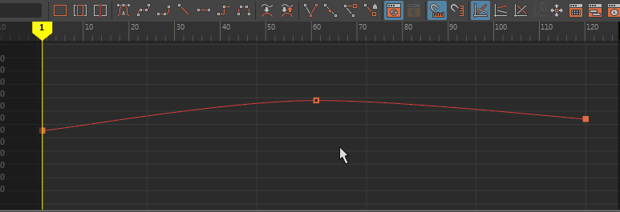

切线是每个“曲线图编辑器”(Graph Editor)关键帧上的控制柄，可用于调整关键帧的出入角度。利用切线，可以平滑或锐化动画移动。
双击关键帧以显示切线，然后选择一个关键帧可进行拉伸。关键帧前后的曲线均会更改，这将影响其速度和距离。
选择切线控制柄时，该控制柄将会亮显。切线控制柄的另一侧将会体现您移动切线的方式。若要分割切线以便仅一侧受影响，请从“曲线图编辑器”(Graph Editor)工具栏中选择“断开切线”(Break Tangent)。断开的切线在“视图”(View)窗格中以虚线显示。

- 锁定切线
- 您可以锁定切线，以便在移动切线时，只能更改其角度。请参见“曲线图编辑器”(Graph Editor)的“切线”(Tangent)菜单中的“锁定切线长度”(Lock Tangent Length)。
- 锁定切线长度之后，它在“图表视图”(Graph View)中变为黑色。